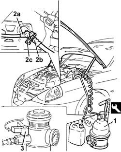

0010T67 HYDRAULIC CLUTCH SYSTEM - Bleed air
- Path
- Procedures > 00 MAINTENANCE > 0010 NEW UNITS AND MAINTENANCE > 0010T vehicle oil and fluids > 0010T67 HYDRAULIC CLUTCH SYSTEM - Bleed air
- Kind
- repair procedure (removal / refitting; the operation number is the code)
- Applies to
- all engines; all production periods
- Interactive page
- https://sloeber94.github.io/elrnDB-lThss/en/#/379562
Applies to: all engines; all production periods
See in Op. 7040D50 ENGINE COMPARTMENT UPPER SOUND INSULATION SHIELD - R.R.
- Check that the brake/clutch fluid in the reservoir is at the maximum level; if this is not the case, top up using the recommended fluid.
- When topping up the brake/clutch fluid, remove the reservoir cap and top up until the maximum level is reached.
 | Description | Qty. | Component | Type | Classification |
|---|---|---|---|---|---|
. | TUTELA TOP 4 | BRAKE-CLUTCH HYDRAULIC SYSTEM | Synthetic fluid | F.M.V.S.S n 116 DOT |
- The symbol on the container identifies synthetic type brake/clutch fluids, distinguishing them from mineral type fluids. The use of mineral type fluids irreparably damages the special rubber seals in the hydraulic brake/clutch system.
- Position the vehicle on a lift.
- Check that the brake/clutch fluid is between the MIN and MAX levels.
- Remove the air cleaner casing with reference to operation 1048B10 for each individual engine.
1. Remove the brake/clutch fluid reservoir cap and connect the equipment to the reservoir.
 | Description | Code | Function |
|---|---|---|---|
1 | Clutch | 1.806.097.000 | Brake bleeding equipment |
2. Connect recover device (pipe and reservoir) (2a) to bleed valve (2b) on the actuator by moving clip (2c) back.
3. Open the fluid reservoir tap slowly.
- Wait for all the air in the hydraulic system to escape.

Applies to: all engines; all production periods
See in Op. 7040D50 ENGINE COMPARTMENT UPPER SOUND INSULATION SHIELD - R.R.